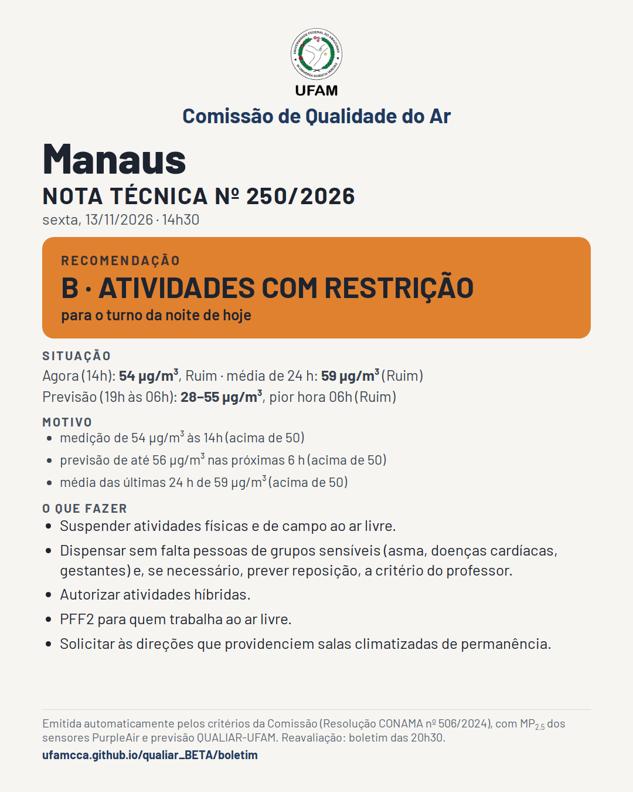
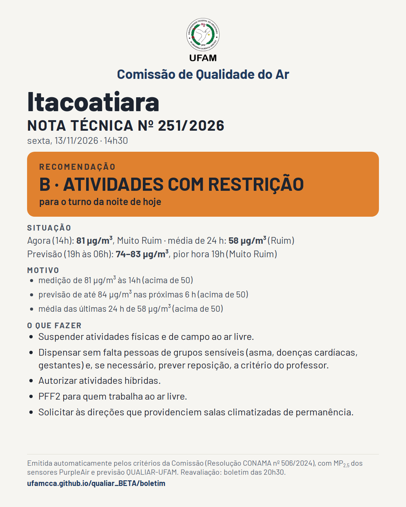
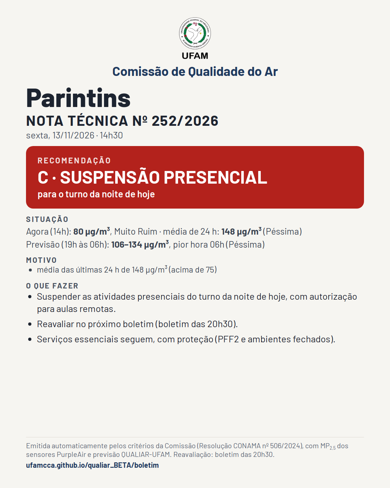
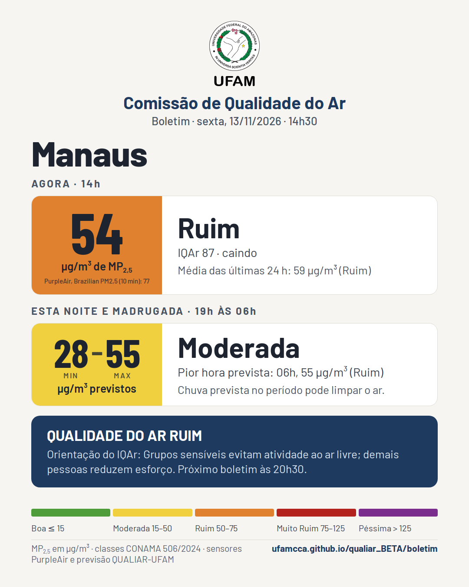
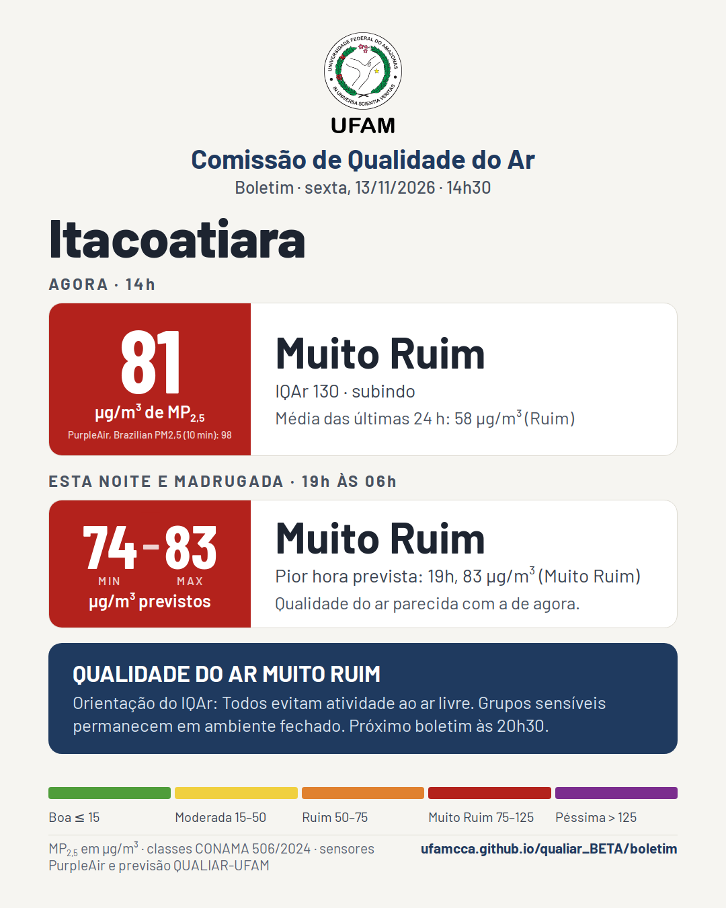
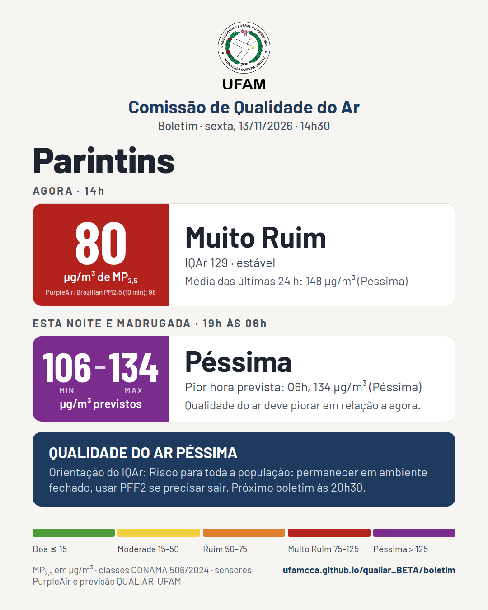
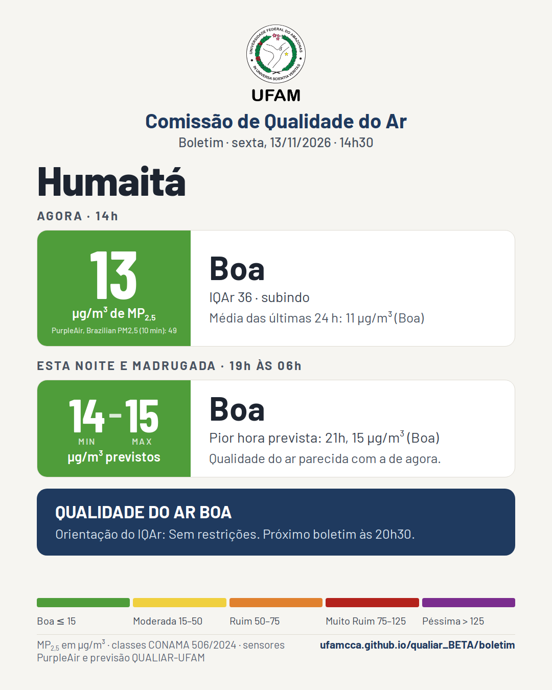
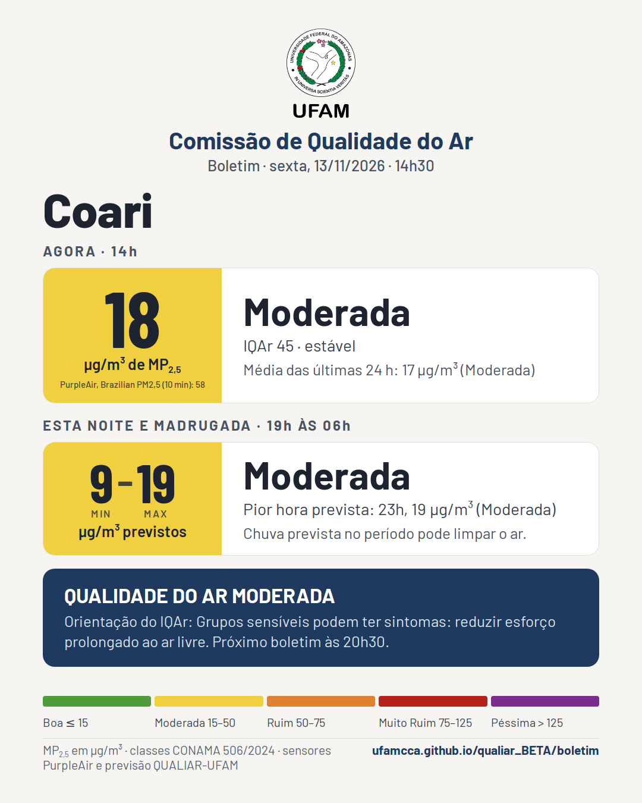

Boletim da qualidade do ar
Comissão de Qualidade do Ar da UFAM · edição de sexta, 13/11/2026, 14h30 · previsão hora a hora no QUALIAR-UFAM
Notas técnicas desta edição






Boletim











A Comissão emite nota técnica para a cidade só quando a recomendação é B (atividades com restrição) ou C (suspensão presencial). Valores de material particulado fino (MP2,5) em µg/m³, mediana dos sensores PurpleAir de cada cidade (correção EPA), classes da Resolução CONAMA nº 506/2024. A previsão é a versão publicada do modelo QUALIAR-UFAM. Boletins às 20h30, 02h30, 08h30 e 14h30. Toque na imagem para abrir em tamanho cheio e compartilhar.
Boletins anteriores
- 13/11/2026 14h30 · Manaus: agora 54 (Ruim) → 28–55 (Moderada) · Itacoatiara: agora 81 (Muito Ruim) → 74–83 (Muito Ruim) · Parintins: agora 80 (Muito Ruim) → 106–134 (Péssima) · Humaitá: agora 13 (Boa) → 14–15 (Boa) · Coari: agora 18 (Moderada) → 9–19 (Moderada) · Benjamin Constant: agora 9 (Boa) → 8–9 (Boa) · Nota 250/2026: Manaus, B · ATIVIDADES COM RESTRIÇÃO · Nota 251/2026: Itacoatiara, B · ATIVIDADES COM RESTRIÇÃO · Nota 252/2026: Parintins, C · SUSPENSÃO PRESENCIAL
- 13/11/2026 08h30 · Manaus: agora 64 (Ruim) → 62–64 (Ruim) · Itacoatiara: agora 48 (Moderada) → 50–55 (Ruim) · Parintins: agora 163 (Péssima) → 148–153 (Péssima) · Humaitá: agora 14 (Boa) → 14–15 (Boa) · Coari: agora 13 (Boa) → 12–14 (Boa) · Benjamin Constant: agora 6 (Boa) → 8 (Boa) · Nota 247/2026: Manaus, B · ATIVIDADES COM RESTRIÇÃO · Nota 248/2026: Itacoatiara, B · ATIVIDADES COM RESTRIÇÃO · Nota 249/2026: Parintins, C · SUSPENSÃO PRESENCIAL
- 13/11/2026 02h30 · Manaus: agora 65 (Ruim) → 55–66 (Ruim) · Itacoatiara: agora 59 (Ruim) → 20–59 (Moderada) · Parintins: agora 258 (Péssima) → 288–307 (Péssima) · Humaitá: agora 9 (Boa) → 10 (Boa) · Coari: agora 14 (Boa) → 10–15 (Boa) · Benjamin Constant: agora 6 (Boa) → 10–12 (Boa) · Nota 244/2026: Manaus, B · ATIVIDADES COM RESTRIÇÃO · Nota 245/2026: Itacoatiara, B · ATIVIDADES COM RESTRIÇÃO · Nota 246/2026: Parintins, C · SUSPENSÃO PRESENCIAL
- 12/11/2026 20h30 · Manaus: agora 69 (Ruim) → 78–81 (Muito Ruim) · Itacoatiara: agora 50 (Moderada) → 46–54 (Ruim) · Parintins: agora 150 (Péssima) → 172–197 (Péssima) · Humaitá: agora 18 (Moderada) → 17–18 (Moderada) · Coari: agora 20 (Moderada) → 15–23 (Moderada) · Benjamin Constant: agora 5 (Boa) → 8–9 (Boa) · Nota 241/2026: Manaus, B · ATIVIDADES COM RESTRIÇÃO · Nota 242/2026: Itacoatiara, B · ATIVIDADES COM RESTRIÇÃO · Nota 243/2026: Parintins, C · SUSPENSÃO PRESENCIAL
- 12/11/2026 14h30 · Manaus: agora 37 (Moderada) → 43–53 (Moderada) · Itacoatiara: agora 53 (Ruim) → 53–57 (Ruim) · Parintins: agora 80 (Muito Ruim) → 102–126 (Muito Ruim) · Humaitá: agora 10 (Boa) → 11–12 (Boa) · Coari: agora 15 (Boa) → 20–29 (Moderada) · Benjamin Constant: agora 10 (Boa) → 10 (Boa) · Nota 238/2026: Manaus, B · ATIVIDADES COM RESTRIÇÃO · Nota 239/2026: Itacoatiara, B · ATIVIDADES COM RESTRIÇÃO · Nota 240/2026: Parintins, C · SUSPENSÃO PRESENCIAL
- 12/11/2026 08h30 · Manaus: agora 58 (Ruim) → 48–54 (Ruim) · Itacoatiara: agora 44 (Moderada) → 45–50 (Moderada) · Parintins: agora 231 (Péssima) → 168–195 (Péssima) · Humaitá: agora 7 (Boa) → 11–12 (Boa) · Coari: agora 16 (Moderada) → 24–28 (Moderada) · Benjamin Constant: agora 5 (Boa) → 8–9 (Boa) · Nota 235/2026: Manaus, B · ATIVIDADES COM RESTRIÇÃO · Nota 236/2026: Itacoatiara, B · ATIVIDADES COM RESTRIÇÃO · Nota 237/2026: Parintins, C · SUSPENSÃO PRESENCIAL
- 12/11/2026 02h30 · Manaus: agora 58 (Ruim) → 56–58 (Ruim) · Itacoatiara: agora 45 (Moderada) → 52–56 (Ruim) · Parintins: agora 211 (Péssima) → 228–247 (Péssima) · Humaitá: agora 15 (Moderada) → 11–15 (Boa) · Coari: agora 39 (Moderada) → 19–32 (Moderada) · Benjamin Constant: agora 4 (Boa) → 8 (Boa) · Nota 232/2026: Manaus, B · ATIVIDADES COM RESTRIÇÃO · Nota 233/2026: Itacoatiara, B · ATIVIDADES COM RESTRIÇÃO · Nota 234/2026: Parintins, C · SUSPENSÃO PRESENCIAL
- 11/11/2026 20h30 · Manaus: agora 62 (Ruim) → 57–67 (Ruim) · Itacoatiara: agora 51 (Ruim) → 52–53 (Ruim) · Parintins: agora 86 (Muito Ruim) → 132–141 (Péssima) · Humaitá: agora 19 (Moderada) → 14–25 (Moderada) · Coari: agora 36 (Moderada) → 30–36 (Moderada) · Benjamin Constant: agora 7 (Boa) → 8–9 (Boa) · Nota 229/2026: Manaus, B · ATIVIDADES COM RESTRIÇÃO · Nota 230/2026: Itacoatiara, B · ATIVIDADES COM RESTRIÇÃO · Nota 231/2026: Parintins, C · SUSPENSÃO PRESENCIAL
- 11/11/2026 14h30 · Manaus: agora 62 (Ruim) → 59–61 (Ruim) · Itacoatiara: agora 66 (Ruim) → 56–62 (Ruim) · Parintins: agora 42 (Moderada) → 93–146 (Péssima) · Humaitá: agora 13 (Boa) → 17–21 (Moderada) · Coari: agora 53 (Ruim) → 48–52 (Ruim) · Benjamin Constant: agora 7 (Boa) → 10–12 (Boa) · Nota 225/2026: Manaus, B · ATIVIDADES COM RESTRIÇÃO · Nota 226/2026: Itacoatiara, B · ATIVIDADES COM RESTRIÇÃO · Nota 227/2026: Parintins, C · SUSPENSÃO PRESENCIAL · Nota 228/2026: Coari, B · ATIVIDADES COM RESTRIÇÃO
- 11/11/2026 08h30 · Manaus: agora 70 (Ruim) → 57–67 (Ruim) · Itacoatiara: agora 63 (Ruim) → 37–53 (Moderada) · Parintins: agora 90 (Muito Ruim) → 118–147 (Péssima) · Humaitá: agora 22 (Moderada) → 23–24 (Moderada) · Coari: agora 27 (Moderada) → 20–27 (Moderada) · Benjamin Constant: agora 6 (Boa) → 9–10 (Boa) · Nota 222/2026: Manaus, B · ATIVIDADES COM RESTRIÇÃO · Nota 223/2026: Itacoatiara, B · ATIVIDADES COM RESTRIÇÃO · Nota 224/2026: Parintins, C · SUSPENSÃO PRESENCIAL
- 11/11/2026 02h30 · Manaus: agora 46 (Moderada) → 44–48 (Moderada) · Itacoatiara: agora 21 (Moderada) → 25–29 (Moderada) · Parintins: agora 167 (Péssima) → 162–169 (Péssima) · Humaitá: agora 24 (Moderada) → 22–23 (Moderada) · Coari: agora 31 (Moderada) → 27–29 (Moderada) · Benjamin Constant: agora 9 (Boa) → 10 (Boa) · Nota 221/2026: Parintins, C · SUSPENSÃO PRESENCIAL
- 10/11/2026 20h30 · Manaus: agora 61 (Ruim) → 49–52 (Ruim) · Itacoatiara: agora 48 (Moderada) → 60–62 (Ruim) · Parintins: agora 209 (Péssima) → 197–212 (Péssima) · Humaitá: agora 21 (Moderada) → 18 (Moderada) · Coari: agora 37 (Moderada) → 25–28 (Moderada) · Benjamin Constant: agora 37 (Moderada) → 17–24 (Moderada) · Nota 218/2026: Manaus, B · ATIVIDADES COM RESTRIÇÃO · Nota 219/2026: Itacoatiara, B · ATIVIDADES COM RESTRIÇÃO · Nota 220/2026: Parintins, C · SUSPENSÃO PRESENCIAL
- 10/11/2026 14h30 · Manaus: agora 51 (Ruim) → 26–55 (Ruim) · Itacoatiara: agora 31 (Moderada) → 60–70 (Ruim) · Parintins: agora 172 (Péssima) → 176–192 (Péssima) · Humaitá: agora 13 (Boa) → 14–15 (Boa) · Coari: agora 17 (Moderada) → 20–21 (Moderada) · Benjamin Constant: agora 11 (Boa) → 10–12 (Boa) · Nota 215/2026: Manaus, B · ATIVIDADES COM RESTRIÇÃO · Nota 216/2026: Itacoatiara, C · SUSPENSÃO PRESENCIAL · Nota 217/2026: Parintins, C · SUSPENSÃO PRESENCIAL
- 10/11/2026 08h30 · Manaus: agora 38 (Moderada) → 39–43 (Moderada) · Itacoatiara: agora 23 (Moderada) → 44–70 (Ruim) · Parintins: agora 73 (Ruim) → 124–188 (Péssima) · Humaitá: agora 10 (Boa) → 12–14 (Boa) · Coari: agora 12 (Boa) → 14–17 (Moderada) · Benjamin Constant: agora 4 (Boa) → 8–10 (Boa) · Nota 212/2026: Manaus, B · ATIVIDADES COM RESTRIÇÃO · Nota 213/2026: Itacoatiara, C · SUSPENSÃO PRESENCIAL · Nota 214/2026: Parintins, C · SUSPENSÃO PRESENCIAL
- 10/11/2026 02h30 · Manaus: agora 41 (Moderada) → 15–45 (Moderada) · Itacoatiara: agora 105 (Muito Ruim) → 53–109 (Muito Ruim) · Parintins: agora 308 (Péssima) → 240–416 (Péssima) · Humaitá: agora 18 (Moderada) → 20–21 (Moderada) · Coari: agora 12 (Boa) → 18–23 (Moderada) · Benjamin Constant: agora 5 (Boa) → 8 (Boa) · Nota 209/2026: Manaus, B · ATIVIDADES COM RESTRIÇÃO · Nota 210/2026: Itacoatiara, C · SUSPENSÃO PRESENCIAL · Nota 211/2026: Parintins, C · SUSPENSÃO PRESENCIAL
- 09/11/2026 20h30 · Manaus: agora 17 (Moderada) → 52–64 (Ruim) · Itacoatiara: agora 103 (Muito Ruim) → 42–111 (Muito Ruim) · Parintins: agora 384 (Péssima) → 236–586 (Péssima) · Humaitá: agora 49 (Moderada) → 45–50 (Moderada) · Coari: agora 12 (Boa) → 43–44 (Moderada) · Benjamin Constant: agora 11 (Boa) → 9 (Boa) · Nota 205/2026: Manaus, C · SUSPENSÃO PRESENCIAL · Nota 206/2026: Itacoatiara, C · SUSPENSÃO PRESENCIAL · Nota 207/2026: Parintins, C · SUSPENSÃO PRESENCIAL · Nota 208/2026: Humaitá, B · ATIVIDADES COM RESTRIÇÃO
- 09/11/2026 14h30 · Manaus: agora 59 (Ruim) → 57–81 (Ruim) · Itacoatiara: agora 156 (Péssima) → 21–165 (Péssima) · Parintins: agora 125 (Péssima) → 115–444 (Péssima) · Humaitá: agora 16 (Moderada) → 20–23 (Moderada) · Coari: agora 41 (Moderada) → 41–56 (Ruim) · Benjamin Constant: agora 12 (Boa) → 10–12 (Boa) · Nota 201/2026: Manaus, C · SUSPENSÃO PRESENCIAL · Nota 202/2026: Itacoatiara, C · SUSPENSÃO PRESENCIAL · Nota 203/2026: Parintins, C · SUSPENSÃO PRESENCIAL · Nota 204/2026: Coari, B · ATIVIDADES COM RESTRIÇÃO
- 09/11/2026 08h30 · Manaus: agora 85 (Muito Ruim) → 80–98 (Muito Ruim) · Itacoatiara: agora 91 (Muito Ruim) → 88–110 (Muito Ruim) · Parintins: agora 672 (Péssima) → 540–597 (Péssima) · Humaitá: agora 13 (Boa) → 18–22 (Moderada) · Coari: agora 87 (Muito Ruim) → 70–86 (Muito Ruim) · Benjamin Constant: agora 3 (Boa) → 8 (Boa) · Nota 197/2026: Manaus, C · SUSPENSÃO PRESENCIAL · Nota 198/2026: Itacoatiara, C · SUSPENSÃO PRESENCIAL · Nota 199/2026: Parintins, C · SUSPENSÃO PRESENCIAL · Nota 200/2026: Coari, B · ATIVIDADES COM RESTRIÇÃO
- 09/11/2026 02h30 · Manaus: agora 79 (Muito Ruim) → 107–111 (Muito Ruim) · Itacoatiara: agora 108 (Muito Ruim) → 119–131 (Péssima) · Parintins: agora 1444 (Péssima) → 1040–1296 (Péssima) · Humaitá: agora 12 (Boa) → 19–26 (Moderada) · Coari: agora 63 (Ruim) → 21–59 (Moderada) · Benjamin Constant: agora 4 (Boa) → 8 (Boa) · Nota 193/2026: Manaus, C · SUSPENSÃO PRESENCIAL · Nota 194/2026: Itacoatiara, C · SUSPENSÃO PRESENCIAL · Nota 195/2026: Parintins, C · SUSPENSÃO PRESENCIAL · Nota 196/2026: Coari, B · ATIVIDADES COM RESTRIÇÃO
- 08/11/2026 20h30 · Manaus: agora 126 (Péssima) → 98–128 (Péssima) · Itacoatiara: agora 229 (Péssima) → 206–282 (Péssima) · Parintins: agora 81 (Muito Ruim) → 230–268 (Péssima) · Humaitá: agora 20 (Moderada) → 41–42 (Moderada) · Coari: agora 71 (Ruim) → 36–64 (Ruim) · Benjamin Constant: agora 17 (Moderada) → 13–17 (Boa) · Nota 189/2026: Manaus, C · SUSPENSÃO PRESENCIAL · Nota 190/2026: Itacoatiara, C · SUSPENSÃO PRESENCIAL · Nota 191/2026: Parintins, C · SUSPENSÃO PRESENCIAL · Nota 192/2026: Coari, B · ATIVIDADES COM RESTRIÇÃO
- 08/11/2026 14h30 · Manaus: agora 101 (Muito Ruim) → 92–96 (Muito Ruim) · Itacoatiara: agora 87 (Muito Ruim) → 128–171 (Péssima) · Parintins: agora 58 (Ruim) → 175–287 (Péssima) · Humaitá: agora 54 (Ruim) → 38–45 (Moderada) · Coari: agora 50 (Moderada) → 36–40 (Moderada) · Benjamin Constant: agora 10 (Boa) → 11–14 (Boa) · Nota 185/2026: Manaus, C · SUSPENSÃO PRESENCIAL · Nota 186/2026: Itacoatiara, C · SUSPENSÃO PRESENCIAL · Nota 187/2026: Parintins, C · SUSPENSÃO PRESENCIAL · Nota 188/2026: Humaitá, B · ATIVIDADES COM RESTRIÇÃO
- 08/11/2026 08h30 · Manaus: agora 58 (Ruim) → 62–73 (Ruim) · Itacoatiara: agora 177 (Péssima) → 199–216 (Péssima) · Parintins: agora 404 (Péssima) → 353–367 (Péssima) · Humaitá: agora 30 (Moderada) → 28–30 (Moderada) · Coari: agora 22 (Moderada) → 26–30 (Moderada) · Benjamin Constant: agora 7 (Boa) → 10–11 (Boa) · Nota 182/2026: Manaus, C · SUSPENSÃO PRESENCIAL · Nota 183/2026: Itacoatiara, C · SUSPENSÃO PRESENCIAL · Nota 184/2026: Parintins, C · SUSPENSÃO PRESENCIAL
- 08/11/2026 02h30 · Manaus: agora 85 (Muito Ruim) → 85 (Muito Ruim) · Itacoatiara: agora 115 (Muito Ruim) → 130–148 (Péssima) · Parintins: agora 349 (Péssima) → 338–351 (Péssima) · Humaitá: agora 22 (Moderada) → 24–26 (Moderada) · Coari: agora 22 (Moderada) → 18–28 (Moderada) · Benjamin Constant: agora 15 (Moderada) → 10–12 (Boa) · Nota 179/2026: Manaus, C · SUSPENSÃO PRESENCIAL · Nota 180/2026: Itacoatiara, C · SUSPENSÃO PRESENCIAL · Nota 181/2026: Parintins, C · SUSPENSÃO PRESENCIAL
- 07/11/2026 20h30 · Manaus: agora 100 (Muito Ruim) → 94–98 (Muito Ruim) · Itacoatiara: agora 207 (Péssima) → 162–172 (Péssima) · Parintins: agora 249 (Péssima) → 443–465 (Péssima) · Humaitá: agora 46 (Moderada) → 56–58 (Ruim) · Coari: agora 26 (Moderada) → 40–44 (Moderada) · Benjamin Constant: agora 32 (Moderada) → 17–28 (Moderada) · Nota 175/2026: Manaus, C · SUSPENSÃO PRESENCIAL · Nota 176/2026: Itacoatiara, C · SUSPENSÃO PRESENCIAL · Nota 177/2026: Parintins, C · SUSPENSÃO PRESENCIAL · Nota 178/2026: Humaitá, B · ATIVIDADES COM RESTRIÇÃO
- 07/11/2026 14h30 · Manaus: agora 76 (Muito Ruim) → 73–74 (Ruim) · Itacoatiara: agora 246 (Péssima) → 164–214 (Péssima) · Parintins: agora 170 (Péssima) → 280–373 (Péssima) · Humaitá: agora 54 (Ruim) → 54–61 (Ruim) · Coari: agora 44 (Moderada) → 53–57 (Ruim) · Benjamin Constant: agora 6 (Boa) → 8 (Boa) · Nota 170/2026: Manaus, B · ATIVIDADES COM RESTRIÇÃO · Nota 171/2026: Itacoatiara, C · SUSPENSÃO PRESENCIAL · Nota 172/2026: Parintins, C · SUSPENSÃO PRESENCIAL · Nota 173/2026: Humaitá, B · ATIVIDADES COM RESTRIÇÃO · Nota 174/2026: Coari, B · ATIVIDADES COM RESTRIÇÃO
- 07/11/2026 08h30 · Manaus: agora 72 (Ruim) → 57–65 (Ruim) · Itacoatiara: agora 76 (Muito Ruim) → 70–71 (Ruim) · Parintins: agora 325 (Péssima) → 336–364 (Péssima) · Humaitá: agora 16 (Moderada) → 20–23 (Moderada) · Coari: agora 61 (Ruim) → 50–56 (Ruim) · Benjamin Constant: agora 3 (Boa) → 8 (Boa) · Nota 166/2026: Manaus, B · ATIVIDADES COM RESTRIÇÃO · Nota 167/2026: Itacoatiara, B · ATIVIDADES COM RESTRIÇÃO · Nota 168/2026: Parintins, C · SUSPENSÃO PRESENCIAL · Nota 169/2026: Coari, B · ATIVIDADES COM RESTRIÇÃO
- 07/11/2026 02h30 · Manaus: agora 75 (Ruim) → 65–70 (Ruim) · Itacoatiara: agora 76 (Muito Ruim) → 70–74 (Ruim) · Parintins: agora 667 (Péssima) → 479–579 (Péssima) · Humaitá: agora 52 (Ruim) → 53–57 (Ruim) · Coari: agora 56 (Ruim) → 38–52 (Moderada) · Benjamin Constant: agora 3 (Boa) → 8 (Boa) · Nota 161/2026: Manaus, B · ATIVIDADES COM RESTRIÇÃO · Nota 162/2026: Itacoatiara, B · ATIVIDADES COM RESTRIÇÃO · Nota 163/2026: Parintins, C · SUSPENSÃO PRESENCIAL · Nota 164/2026: Humaitá, B · ATIVIDADES COM RESTRIÇÃO · Nota 165/2026: Coari, B · ATIVIDADES COM RESTRIÇÃO
- 06/11/2026 20h30 · Manaus: agora 74 (Ruim) → 60–65 (Ruim) · Itacoatiara: agora 63 (Ruim) → 50–53 (Ruim) · Parintins: agora 238 (Péssima) → 276–287 (Péssima) · Humaitá: agora 34 (Moderada) → 25–27 (Moderada) · Coari: agora 55 (Ruim) → 36–41 (Moderada) · Benjamin Constant: agora 4 (Boa) → 8 (Boa) · Nota 157/2026: Manaus, B · ATIVIDADES COM RESTRIÇÃO · Nota 158/2026: Itacoatiara, B · ATIVIDADES COM RESTRIÇÃO · Nota 159/2026: Parintins, C · SUSPENSÃO PRESENCIAL · Nota 160/2026: Coari, B · ATIVIDADES COM RESTRIÇÃO
- 06/11/2026 14h30 · Manaus: agora 58 (Ruim) → 41–51 (Moderada) · Itacoatiara: agora 57 (Ruim) → 41–49 (Moderada) · Parintins: agora 138 (Péssima) → 146–149 (Péssima) · Humaitá: agora 25 (Moderada) → 21–24 (Moderada) · Coari: agora 52 (Ruim) → 46–58 (Ruim) · Benjamin Constant: agora 7 (Boa) → 8 (Boa) · Nota 153/2026: Manaus, B · ATIVIDADES COM RESTRIÇÃO · Nota 154/2026: Itacoatiara, B · ATIVIDADES COM RESTRIÇÃO · Nota 155/2026: Parintins, C · SUSPENSÃO PRESENCIAL · Nota 156/2026: Coari, B · ATIVIDADES COM RESTRIÇÃO
- 06/11/2026 08h30 · Manaus: agora 34 (Moderada) → 34–36 (Moderada) · Itacoatiara: agora 45 (Moderada) → 44–46 (Moderada) · Parintins: agora 341 (Péssima) → 282–337 (Péssima) · Humaitá: agora 23 (Moderada) → 28–29 (Moderada) · Coari: agora 16 (Moderada) → 18 (Moderada) · Benjamin Constant: agora 3 (Boa) → 9–10 (Boa) · Nota 152/2026: Parintins, C · SUSPENSÃO PRESENCIAL
- 06/11/2026 02h30 · Manaus: agora 28 (Moderada) → 29 (Moderada) · Itacoatiara: agora 25 (Moderada) → 28–31 (Moderada) · Parintins: agora 88 (Muito Ruim) → 119–151 (Péssima) · Humaitá: agora 11 (Boa) → 14–18 (Moderada) · Coari: agora 12 (Boa) → 13–14 (Boa) · Benjamin Constant: agora 1 (Boa) → 9 (Boa) · Nota 151/2026: Parintins, C · SUSPENSÃO PRESENCIAL
- 05/11/2026 20h30 · Manaus: agora 18 (Moderada) → 24–25 (Moderada) · Itacoatiara: agora 20 (Moderada) → 31–34 (Moderada) · Parintins: agora 55 (Ruim) → 150–176 (Péssima) · Humaitá: agora 14 (Boa) → 24–27 (Moderada) · Coari: agora 14 (Boa) → 20–22 (Moderada) · Benjamin Constant: agora 14 (Boa) → 12 (Boa) · Nota 150/2026: Parintins, C · SUSPENSÃO PRESENCIAL
- 05/11/2026 14h30 · Manaus: agora 31 (Moderada) → 33–34 (Moderada) · Itacoatiara: agora 50 (Moderada) → 50–52 (Ruim) · Parintins: agora 93 (Muito Ruim) → 138–188 (Péssima) · Humaitá: agora 19 (Moderada) → 29–34 (Moderada) · Coari: agora 17 (Moderada) → 16–18 (Moderada) · Benjamin Constant: agora 10 (Boa) → 9–10 (Boa) · Nota 148/2026: Itacoatiara, B · ATIVIDADES COM RESTRIÇÃO · Nota 149/2026: Parintins, C · SUSPENSÃO PRESENCIAL
- 05/11/2026 08h30 · Manaus: agora 31 (Moderada) → 23–30 (Moderada) · Itacoatiara: agora 46 (Moderada) → 46–50 (Moderada) · Parintins: agora 165 (Péssima) → 139–172 (Péssima) · Humaitá: agora 30 (Moderada) → 22–29 (Moderada) · Coari: agora 14 (Boa) → 13–15 (Boa) · Benjamin Constant: agora 5 (Boa) → 9 (Boa) · Nota 147/2026: Parintins, C · SUSPENSÃO PRESENCIAL
- 05/11/2026 02h30 · Manaus: agora 21 (Moderada) → 23–27 (Moderada) · Itacoatiara: agora 44 (Moderada) → 39–63 (Ruim) · Parintins: agora 451 (Péssima) → 466–513 (Péssima) · Humaitá: agora 36 (Moderada) → 32–34 (Moderada) · Coari: agora 19 (Moderada) → 19–20 (Moderada) · Benjamin Constant: agora 4 (Boa) → 8 (Boa) · Nota 145/2026: Itacoatiara, B · ATIVIDADES COM RESTRIÇÃO · Nota 146/2026: Parintins, C · SUSPENSÃO PRESENCIAL
- 04/11/2026 20h30 · Manaus: agora 23 (Moderada) → 26–33 (Moderada) · Itacoatiara: agora 42 (Moderada) → 55–60 (Ruim) · Parintins: agora 95 (Muito Ruim) → 126–130 (Péssima) · Humaitá: agora 41 (Moderada) → 30–33 (Moderada) · Coari: agora 22 (Moderada) → 17–19 (Moderada) · Benjamin Constant: agora 11 (Boa) → 10–12 (Boa) · Nota 143/2026: Itacoatiara, B · ATIVIDADES COM RESTRIÇÃO · Nota 144/2026: Parintins, C · SUSPENSÃO PRESENCIAL
- 04/11/2026 14h30 · Manaus: agora 49 (Moderada) → 37–43 (Moderada) · Itacoatiara: agora 57 (Ruim) → 59–64 (Ruim) · Parintins: agora 65 (Ruim) → 90–111 (Muito Ruim) · Humaitá: agora 29 (Moderada) → 28–33 (Moderada) · Coari: agora 16 (Moderada) → 12–14 (Boa) · Benjamin Constant: agora 6 (Boa) → 8 (Boa) · Nota 141/2026: Itacoatiara, B · ATIVIDADES COM RESTRIÇÃO · Nota 142/2026: Parintins, C · SUSPENSÃO PRESENCIAL
- 04/11/2026 08h30 · Manaus: agora 42 (Moderada) → 30–40 (Moderada) · Itacoatiara: agora 76 (Muito Ruim) → 74–75 (Muito Ruim) · Parintins: agora 124 (Muito Ruim) → 119–131 (Muito Ruim) · Humaitá: agora 18 (Moderada) → 20–22 (Moderada) · Coari: agora 11 (Boa) → 12 (Boa) · Benjamin Constant: agora 4 (Boa) → 9 (Boa) · Nota 139/2026: Itacoatiara, B · ATIVIDADES COM RESTRIÇÃO · Nota 140/2026: Parintins, C · SUSPENSÃO PRESENCIAL
- 04/11/2026 02h30 · Manaus: agora 25 (Moderada) → 28–30 (Moderada) · Itacoatiara: agora 70 (Ruim) → 67–69 (Ruim) · Parintins: agora 67 (Ruim) → 97–122 (Muito Ruim) · Humaitá: agora 12 (Boa) → 17–23 (Moderada) · Coari: agora 9 (Boa) → 10–11 (Boa) · Benjamin Constant: agora 3 (Boa) → 8 (Boa) · Nota 137/2026: Itacoatiara, B · ATIVIDADES COM RESTRIÇÃO · Nota 138/2026: Parintins, C · SUSPENSÃO PRESENCIAL
- 03/11/2026 20h30 · Manaus: agora 25 (Moderada) → 36–39 (Moderada) · Itacoatiara: agora 48 (Moderada) → 51–57 (Ruim) · Parintins: agora 177 (Péssima) → 249–267 (Péssima) · Humaitá: agora 13 (Boa) → 32–35 (Moderada) · Coari: agora 9 (Boa) → 14–16 (Moderada) · Benjamin Constant: agora 6 (Boa) → 9 (Boa) · Nota 135/2026: Itacoatiara, B · ATIVIDADES COM RESTRIÇÃO · Nota 136/2026: Parintins, C · SUSPENSÃO PRESENCIAL
- 03/11/2026 14h30 · Manaus: agora 26 (Moderada) → 38–48 (Moderada) · Itacoatiara: agora 80 (Muito Ruim) → 83–85 (Muito Ruim) · Parintins: agora 89 (Muito Ruim) → 134–189 (Péssima) · Humaitá: agora 43 (Moderada) → 48–55 (Ruim) · Coari: agora 10 (Boa) → 22–24 (Moderada) · Benjamin Constant: agora 6 (Boa) → 8–9 (Boa) · Nota 131/2026: Manaus, B · ATIVIDADES COM RESTRIÇÃO · Nota 132/2026: Itacoatiara, C · SUSPENSÃO PRESENCIAL · Nota 133/2026: Parintins, C · SUSPENSÃO PRESENCIAL · Nota 134/2026: Humaitá, B · ATIVIDADES COM RESTRIÇÃO
- 03/11/2026 08h30 · Manaus: agora 44 (Moderada) → 35–54 (Moderada) · Itacoatiara: agora 66 (Ruim) → 66–83 (Ruim) · Parintins: agora 290 (Péssima) → 218–249 (Péssima) · Humaitá: agora 29 (Moderada) → 31–38 (Moderada) · Coari: agora 12 (Boa) → 14–16 (Moderada) · Benjamin Constant: agora 3 (Boa) → 8 (Boa) · Nota 128/2026: Manaus, B · ATIVIDADES COM RESTRIÇÃO · Nota 129/2026: Itacoatiara, C · SUSPENSÃO PRESENCIAL · Nota 130/2026: Parintins, C · SUSPENSÃO PRESENCIAL
- 03/11/2026 02h30 · Manaus: agora 53 (Ruim) → 34–57 (Moderada) · Itacoatiara: agora 54 (Ruim) → 67–71 (Ruim) · Parintins: agora 473 (Péssima) → 448–536 (Péssima) · Humaitá: agora 50 (Moderada) → 17–35 (Moderada) · Coari: agora 19 (Moderada) → 19–20 (Moderada) · Benjamin Constant: agora 2 (Boa) → 8 (Boa) · Nota 125/2026: Manaus, B · ATIVIDADES COM RESTRIÇÃO · Nota 126/2026: Itacoatiara, C · SUSPENSÃO PRESENCIAL · Nota 127/2026: Parintins, C · SUSPENSÃO PRESENCIAL
- 02/11/2026 20h30 · Manaus: agora 73 (Ruim) → 25–65 (Moderada) · Itacoatiara: agora 129 (Péssima) → 43–69 (Ruim) · Parintins: agora 147 (Péssima) → 251–284 (Péssima) · Humaitá: agora 60 (Ruim) → 20–51 (Moderada) · Coari: agora 34 (Moderada) → 25–28 (Moderada) · Benjamin Constant: agora 4 (Boa) → 8 (Boa) · Nota 121/2026: Manaus, B · ATIVIDADES COM RESTRIÇÃO · Nota 122/2026: Itacoatiara, C · SUSPENSÃO PRESENCIAL · Nota 123/2026: Parintins, C · SUSPENSÃO PRESENCIAL · Nota 124/2026: Humaitá, B · ATIVIDADES COM RESTRIÇÃO
- 02/11/2026 14h30 · Manaus: agora 66 (Ruim) → 22–64 (Ruim) · Itacoatiara: agora 124 (Muito Ruim) → 66–113 (Muito Ruim) · Parintins: agora 167 (Péssima) → 222–282 (Péssima) · Humaitá: agora 31 (Moderada) → 37–38 (Moderada) · Coari: agora 17 (Moderada) → 15–16 (Moderada) · Benjamin Constant: agora 5 (Boa) → 8 (Boa) · Nota 118/2026: Manaus, B · ATIVIDADES COM RESTRIÇÃO · Nota 119/2026: Itacoatiara, C · SUSPENSÃO PRESENCIAL · Nota 120/2026: Parintins, C · SUSPENSÃO PRESENCIAL
- 02/11/2026 08h30 · Manaus: agora 51 (Ruim) → 43–45 (Moderada) · Itacoatiara: agora 114 (Muito Ruim) → 110–117 (Muito Ruim) · Parintins: agora 166 (Péssima) → 205–250 (Péssima) · Humaitá: agora 12 (Boa) → 16–20 (Moderada) · Coari: agora 11 (Boa) → 12–13 (Boa) · Benjamin Constant: agora 4 (Boa) → 8–9 (Boa) · Nota 115/2026: Manaus, B · ATIVIDADES COM RESTRIÇÃO · Nota 116/2026: Itacoatiara, B · ATIVIDADES COM RESTRIÇÃO · Nota 117/2026: Parintins, C · SUSPENSÃO PRESENCIAL
- 02/11/2026 02h30 · Manaus: agora 51 (Ruim) → 39–50 (Moderada) · Itacoatiara: agora 82 (Muito Ruim) → 65–78 (Muito Ruim) · Parintins: agora 622 (Péssima) → 730–779 (Péssima) · Humaitá: agora 21 (Moderada) → 22–23 (Moderada) · Coari: agora 10 (Boa) → 12–14 (Boa) · Benjamin Constant: agora 5 (Boa) → 8 (Boa) · Nota 112/2026: Manaus, B · ATIVIDADES COM RESTRIÇÃO · Nota 113/2026: Itacoatiara, B · ATIVIDADES COM RESTRIÇÃO · Nota 114/2026: Parintins, C · SUSPENSÃO PRESENCIAL
- 01/11/2026 20h30 · Manaus: agora 48 (Moderada) → 50–51 (Ruim) · Itacoatiara: agora 78 (Muito Ruim) → 64–75 (Ruim) · Parintins: agora 81 (Muito Ruim) → 152–168 (Péssima) · Humaitá: agora 33 (Moderada) → 25–27 (Moderada) · Coari: agora 12 (Boa) → 18–19 (Moderada) · Benjamin Constant: agora 5 (Boa) → 8 (Boa) · Nota 109/2026: Manaus, B · ATIVIDADES COM RESTRIÇÃO · Nota 110/2026: Itacoatiara, B · ATIVIDADES COM RESTRIÇÃO · Nota 111/2026: Parintins, C · SUSPENSÃO PRESENCIAL
- 01/11/2026 14h30 · Manaus: agora 32 (Moderada) → 36–39 (Moderada) · Itacoatiara: agora 63 (Ruim) → 57–62 (Ruim) · Parintins: agora 64 (Ruim) → 110–157 (Péssima) · Humaitá: agora 31 (Moderada) → 22–24 (Moderada) · Coari: agora 16 (Moderada) → 24–26 (Moderada) · Benjamin Constant: agora 4 (Boa) → 8 (Boa) · Nota 107/2026: Itacoatiara, B · ATIVIDADES COM RESTRIÇÃO · Nota 108/2026: Parintins, C · SUSPENSÃO PRESENCIAL
- 01/11/2026 08h30 · Manaus: agora 32 (Moderada) → 34–39 (Moderada) · Itacoatiara: agora 42 (Moderada) → 44–46 (Moderada) · Parintins: agora 196 (Péssima) → 225–229 (Péssima) · Humaitá: agora 9 (Boa) → 10–11 (Boa) · Coari: agora 26 (Moderada) → 15–27 (Moderada) · Benjamin Constant: agora 4 (Boa) → 8 (Boa) · Nota 106/2026: Parintins, C · SUSPENSÃO PRESENCIAL
- 01/11/2026 02h30 · Manaus: agora 36 (Moderada) → 42–47 (Moderada) · Itacoatiara: agora 51 (Ruim) → 52 (Ruim) · Parintins: agora 348 (Péssima) → 253–311 (Péssima) · Humaitá: agora 11 (Boa) → 12–13 (Boa) · Coari: agora 21 (Moderada) → 20–21 (Moderada) · Benjamin Constant: agora 3 (Boa) → 8 (Boa) · Nota 104/2026: Itacoatiara, B · ATIVIDADES COM RESTRIÇÃO · Nota 105/2026: Parintins, C · SUSPENSÃO PRESENCIAL
- 31/10/2026 20h30 · Manaus: agora 40 (Moderada) → 53 (Ruim) · Itacoatiara: agora 47 (Moderada) → 58–61 (Ruim) · Parintins: agora 123 (Muito Ruim) → 150–154 (Péssima) · Humaitá: agora 15 (Moderada) → 14–15 (Boa) · Coari: agora 24 (Moderada) → 19–20 (Moderada) · Benjamin Constant: agora 11 (Boa) → 11–12 (Boa) · Nota 101/2026: Manaus, B · ATIVIDADES COM RESTRIÇÃO · Nota 102/2026: Itacoatiara, B · ATIVIDADES COM RESTRIÇÃO · Nota 103/2026: Parintins, C · SUSPENSÃO PRESENCIAL
- 31/10/2026 14h30 · Manaus: agora 54 (Ruim) → 46–49 (Moderada) · Itacoatiara: agora 48 (Moderada) → 60–73 (Ruim) · Parintins: agora 24 (Moderada) → 50–76 (Ruim) · Humaitá: agora 14 (Boa) → 10–14 (Boa) · Coari: agora 12 (Boa) → 13–14 (Boa) · Benjamin Constant: agora 7 (Boa) → 9–10 (Boa) · Nota 98/2026: Manaus, B · ATIVIDADES COM RESTRIÇÃO · Nota 99/2026: Itacoatiara, C · SUSPENSÃO PRESENCIAL · Nota 100/2026: Parintins, C · SUSPENSÃO PRESENCIAL
- 31/10/2026 08h30 · Manaus: agora 58 (Ruim) → 45–51 (Moderada) · Itacoatiara: agora 70 (Ruim) → 64–76 (Ruim) · Parintins: agora 105 (Muito Ruim) → 106–109 (Muito Ruim) · Humaitá: agora 11 (Boa) → 12 (Boa) · Coari: agora 10 (Boa) → 13–15 (Boa) · Benjamin Constant: agora 1 (Boa) → 8 (Boa) · Nota 95/2026: Manaus, B · ATIVIDADES COM RESTRIÇÃO · Nota 96/2026: Itacoatiara, C · SUSPENSÃO PRESENCIAL · Nota 97/2026: Parintins, C · SUSPENSÃO PRESENCIAL
- 31/10/2026 02h30 · Manaus: agora 47 (Moderada) → 25–41 (Moderada) · Itacoatiara: agora 85 (Muito Ruim) → 52–64 (Ruim) · Parintins: agora 111 (Muito Ruim) → 91–116 (Muito Ruim) · Humaitá: agora 10 (Boa) → 13–17 (Moderada) · Coari: agora 13 (Boa) → 15–18 (Moderada) · Benjamin Constant: agora 6 (Boa) → 8 (Boa) · Nota 93/2026: Itacoatiara, C · SUSPENSÃO PRESENCIAL · Nota 94/2026: Parintins, C · SUSPENSÃO PRESENCIAL
- 30/10/2026 20h30 · Manaus: agora 29 (Moderada) → 24–34 (Moderada) · Itacoatiara: agora 103 (Muito Ruim) → 88–98 (Muito Ruim) · Parintins: agora 86 (Muito Ruim) → 136–168 (Péssima) · Humaitá: agora 13 (Boa) → 28–30 (Moderada) · Coari: agora 22 (Moderada) → 26–27 (Moderada) · Benjamin Constant: agora 8 (Boa) → 8–9 (Boa) · Nota 91/2026: Itacoatiara, C · SUSPENSÃO PRESENCIAL · Nota 92/2026: Parintins, C · SUSPENSÃO PRESENCIAL
- 30/10/2026 14h30 · Manaus: agora 8 (Boa) → 52–58 (Ruim) · Itacoatiara: agora 81 (Muito Ruim) → 78–86 (Muito Ruim) · Parintins: agora 94 (Muito Ruim) → 132–179 (Péssima) · Humaitá: agora 17 (Moderada) → 23–34 (Moderada) · Coari: agora 42 (Moderada) → 30–38 (Moderada) · Benjamin Constant: agora 6 (Boa) → 9–10 (Boa) · Nota 88/2026: Manaus, B · ATIVIDADES COM RESTRIÇÃO · Nota 89/2026: Itacoatiara, C · SUSPENSÃO PRESENCIAL · Nota 90/2026: Parintins, C · SUSPENSÃO PRESENCIAL
- 30/10/2026 08h30 · Manaus: agora 64 (Ruim) → 41–55 (Moderada) · Itacoatiara: agora 77 (Muito Ruim) → 70–80 (Muito Ruim) · Parintins: agora 262 (Péssima) → 236–249 (Péssima) · Humaitá: agora 14 (Boa) → 20–25 (Moderada) · Coari: agora 36 (Moderada) → 21–38 (Moderada) · Benjamin Constant: agora 4 (Boa) → 9 (Boa) · Nota 85/2026: Manaus, B · ATIVIDADES COM RESTRIÇÃO · Nota 86/2026: Itacoatiara, C · SUSPENSÃO PRESENCIAL · Nota 87/2026: Parintins, C · SUSPENSÃO PRESENCIAL
- 30/10/2026 02h30 · Manaus: agora 68 (Ruim) → 12–69 (Ruim) · Itacoatiara: agora 64 (Ruim) → 30–48 (Moderada) · Parintins: agora 225 (Péssima) → 211–278 (Péssima) · Humaitá: agora 46 (Moderada) → 36–41 (Moderada) · Coari: agora 18 (Moderada) → 18 (Moderada) · Benjamin Constant: agora 6 (Boa) → 8 (Boa) · Nota 82/2026: Manaus, B · ATIVIDADES COM RESTRIÇÃO · Nota 83/2026: Itacoatiara, C · SUSPENSÃO PRESENCIAL · Nota 84/2026: Parintins, C · SUSPENSÃO PRESENCIAL
- 29/10/2026 20h30 · Manaus: agora 64 (Ruim) → 30–63 (Ruim) · Itacoatiara: agora 71 (Ruim) → 20–41 (Moderada) · Parintins: agora 126 (Péssima) → 210–310 (Péssima) · Humaitá: agora 53 (Ruim) → 40–46 (Moderada) · Coari: agora 21 (Moderada) → 14–18 (Moderada) · Benjamin Constant: agora 7 (Boa) → 9–14 (Boa) · Nota 78/2026: Manaus, B · ATIVIDADES COM RESTRIÇÃO · Nota 79/2026: Itacoatiara, C · SUSPENSÃO PRESENCIAL · Nota 80/2026: Parintins, C · SUSPENSÃO PRESENCIAL · Nota 81/2026: Humaitá, B · ATIVIDADES COM RESTRIÇÃO